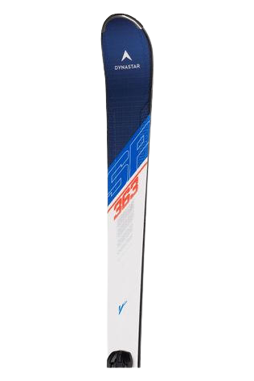

Ik ben Jonathan en ik ben 15 jaar oud. Ben geboren in Amsterdam, maar woon nu in Abcoude.
Ik speel hockey drie keer in de week en tennis één keer per week. 's Winters ski ik.
Toen ik op de basisschool zat, zat ik op de Paulusschool een kleine school met ongv. 200 leerlingen.
Ik hou erg van eten. Het lekkerst vind ik sushi en lasagne.
Ik zit op de middelbare school: Het Amsterdams Lyceum. Daar doe ik N&T met informatica, NLT en Wiskunde D
Ik woon samen met mijn vader, moeder en tweelingzus. Ik heb ook drie huisdieren: 2 paarden en een hond.
Verder hou ik ervan om in mijn vrije tijd Netflix te kijken een van mijn favorite series is Better Call Saul die bij het Breaking bad universum hoort.
Die serie gaat over een advocaat genaamd Jimmy Mcgill die een alter ego krijgt: Saul Goodman en allerlei illegale dingen gaat doen.
Momenteel kijk ik Suits, dat gaat over een advocaat genaamd Mike Ross. Die probeert een baan te krijgen bij een groot firma.
Ook hou erg ik van het spelen van videogames, zoals Call of Duty, Minecraft en Valorant.
Mijn favoriete vakantie is, denk ik, de voorjaarsvakantie, omdat ik erg van sneeuw en skiën en sleeën hou.
